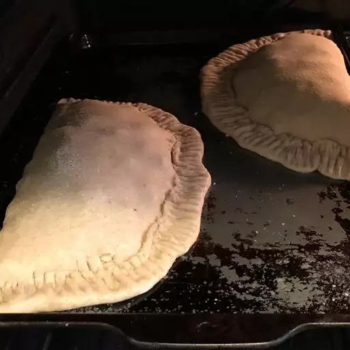

Home
Sausage, Spinach, and Ricotta Calzone

Description
This calzone recipe with ricotta, Italian sausage, and spinach is a great combination!
Ingredients
Dough
- 1 ½ cups all-purpose flour, or more if needed
- 1 envelope Fleischmann's® Pizza Crust Yeast
- 1 teaspoon sugar
- ¾ teaspoon salt
- ⅔ cup very warm water (120 degrees F to 130 degrees F)
- 1 tablespoon vegetable oil
Filling
- 8 ounces Italian sausage
- 2 cups fresh spinach leaves
- ¼ cup water
- ¾ cup ricotta cheese
- ¾ cup shredded mozzarella cheese
- 1 large egg
- 1 teaspoon Spice Islands® Italian Herb Seasoning
- ½ teaspoon Spice Islands® Crushed Red Pepper
- ½ teaspoon Spice Islands® Garlic Salt
Other
2 cups pizza sauce, for dipping
Steps
- Preheat the oven to 375 degrees F (190 degrees C).
- Make dough: Combine 1 cup flour, yeast, sugar, and salt in a large bowl. Add very warm water and oil; mix until well blended, about 1 minute. Gradually add enough remaining flour to make a soft, slightly sticky dough ball. Knead on a floured surface, adding more flour if needed, until smooth and elastic, about 4 minutes. Cover and let rest on the floured surface.
- While dough rests, make filling: Cook and stir sausage in a large skillet over medium-high heat until crumbly and browned, 5 to 7 minutes. Use a slotted spoon to remove sausage to a paper towel-lined plate to drain; discard grease from the skillet. Add spinach and water to the skillet; sauté over medium heat until spinach is wilted, 1 to 2 minutes; drain liquid. Return sausage to the skillet with spinach. Set aside.
- Combine ricotta, mozzarella, and egg in a mixing bowl. Stir in Italian seasoning, crushed red pepper, and garlic salt; set aside.
- Divide dough into 4 equal pieces. Roll 1 dough piece into an 8-inch circle on a floured surface. Spread about 1/3 cup ricotta mixture over the bottom half of dough, leaving a 1/2-inch border. Top with heaping 1/3 cup sausage-spinach mixture. Fold the top half of dough over filling. Pull the edge of the lower crust over the top; fold and press layers together to seal. Transfer to a greased baking sheet; cut 3 to 4 vents on top. Repeat with remaining dough.
- Bake in the preheated oven until lightly browned, 15 to 20 minutes. Transfer calzones to a wire rack to keep the bottom crust crisp while cooling slightly. Serve with pizza sauce for dipping.